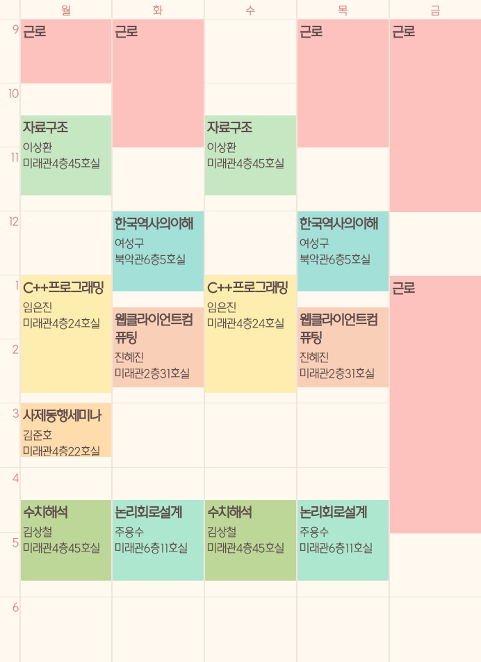

죽음의 시간표

국가근로를 하게 되었습니다. 본부관 입학팀에서 일하고, 보이는 시간표와 같이 움직입니다.
문제가 있습니다. 코로나 때문에 온라인 강의로 진행하게 되었는데요. 원래는 월·화·목 모두 근로가 끝나면 수업을 들으러 가면 되지만...
그럴필요가 없어졌습니다. 정말 슬프게도 월요일 1시간을 일하고 9000원을 벌기위해 저는 왕복 한시간의 국민대로 가야만 합니다.